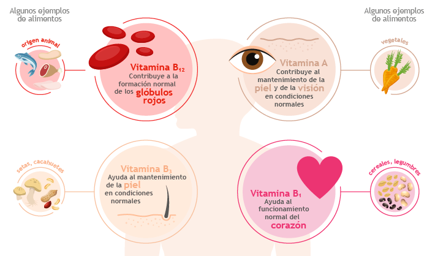

La importancia de las vitaminas para el cuerpo humano
Vìdeos
Enlaces
BENEFICIOS DE LAS VITAMINAS EL CUERPO HUMANO

Vitaminas. Componentes esenciales
Un aporte equilibrado de vitaminas y minerales es fundamental para un correcto funcionamiento de todos los sistemas del organism